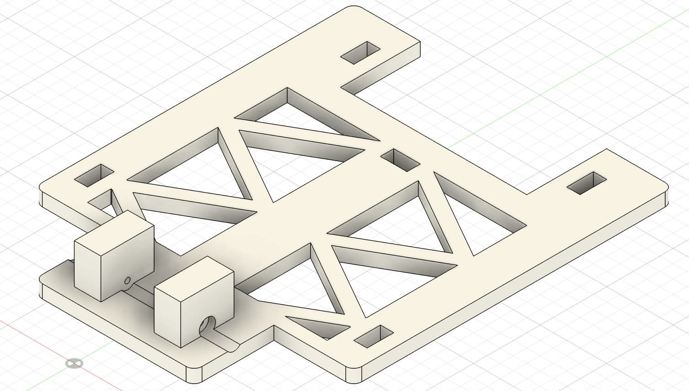
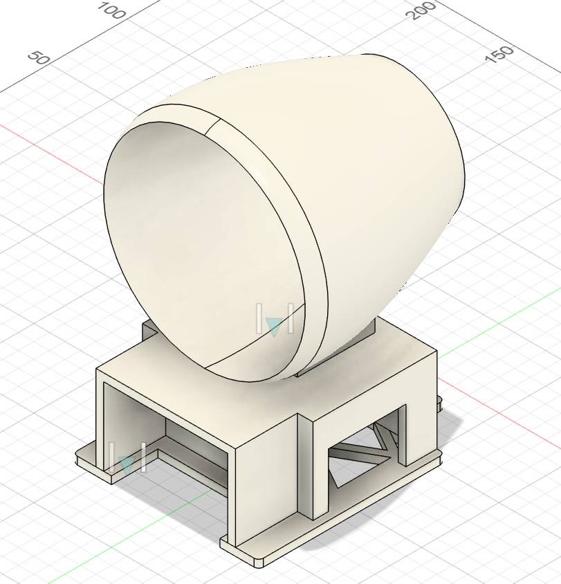
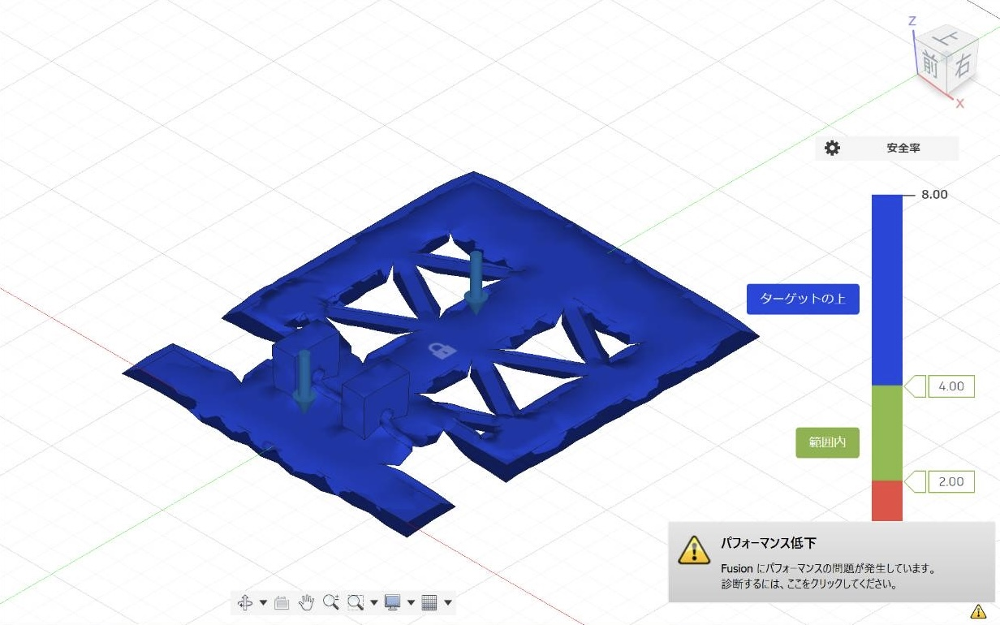
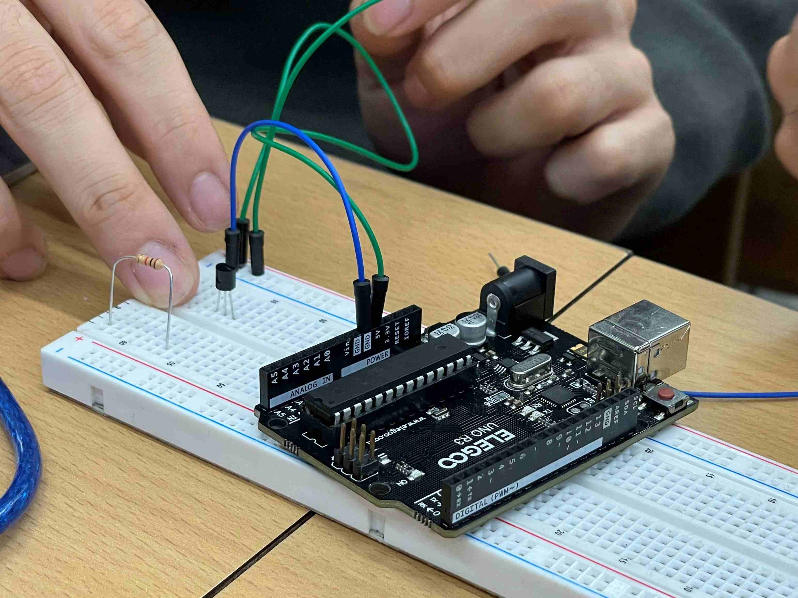
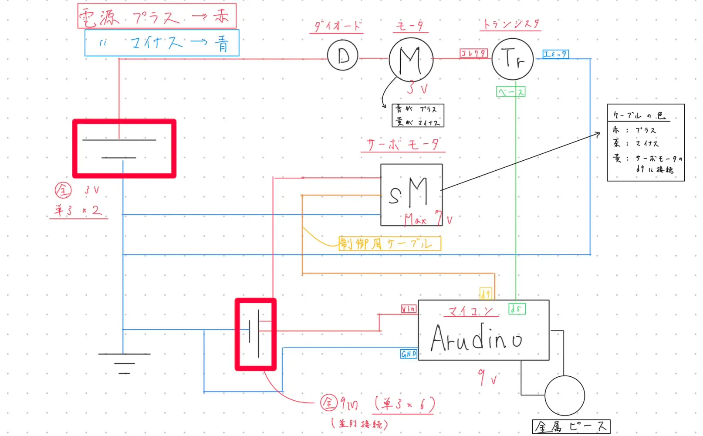
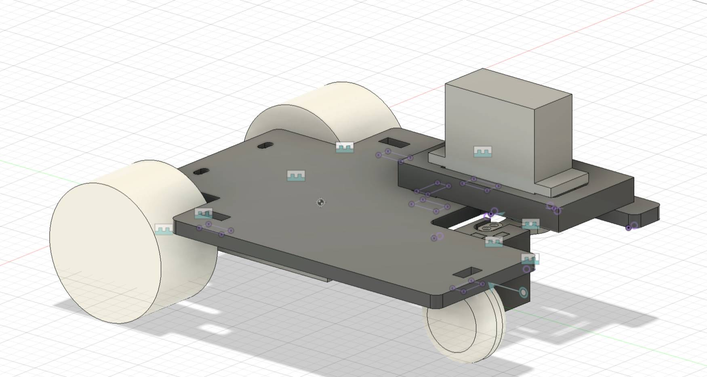

創成プロジェクト A1班
課題を達成するモビリティの創造。
軽量、低コスト、そして成功率90%以上を目指す高精度な自律走行を実現する。
プロジェクト目標
軽量化
車体の軽量化を追求する。
低コスト
低コストでモビリティの実現を目指す。
安定動作性
厳密な制御により、安定した動作性を確保する。
必要最低限の装備
目標達成に必須な装備のみに絞り込む。
マイコン制御による達成
マイクロコンピュータを活用して、全ての課題を達成する。
SDGsへの貢献 (部品再利用)
既存部品の再利用を通じて、SDGs目標達成に貢献する。
成功率90%以上
デモンストレーションにおいて成功率90%以上の達成を目指す。
技術概要
主要スペック一覧
| サイズ | 150㎜ × 120㎜ × 130㎜ |
|---|---|
| 駆動方式 | 二輪駆動タイヤ方式 (安定した推進力を実現) |
| 制御システム | マイクロコンピュータ (C++ / Arduino) 制御 |
| 反転機構 | サーボモータ駆動による車体180°回転 |
| 旋回機構 | サーボモータを用いた正確なステアリング旋回 |
| トリガ機構 | 金属ピース検出 (ON/OFFスイッチとして機能) |
車体の安定動作と複雑なUターン機構を、マイコン制御で実現しています。
ロジック
金属センサーの状態に応じて、待機 → 直進駆動 → 一時停止 → Uターン・再開 のサイクルを自動で切り替えるロジックを採用。成功率90%以上を支える厳密な制御です。
マイコンによる高精度制御
単なる駆動ではなく、マイクロコンピュータで旋回と180°反転を精密に制御。特にUターン動作の正確性が、課題達成の鍵となります。
電力安定化
ノイズや過負荷による誤動作を防ぐため、DCモータとマイコン/サーボの電力系統を分けました。
設計変更による課題克服
当初のファン駆動では必要な推力が得られないと判断し、安定性・推進力に優れたタイヤ駆動へ早期に方針転換しました。この柔軟な対応が実現に繋がりました。
🔄 360° 車体ビューア


画像ファイル（car_01.jpg, car_02.jpg など）を配置してください。
製作ヒストリー
当初はファン駆動の車体を製作することを検討していましたが、途中で大きく方針転換しました。
① 車体の設計：台車部分及び全体図
プロジェクト開始にあたり、車体構造の基礎設計を行い、台車部分と全体の構成図を作成しました。


② 部品の強度計算
設計した各部品の強度計算を実施し、ファン駆動における動作環境での耐久性を検証しました。

③ ファン部分の確認と問題発覚
ファン駆動に必要な推力を確保できるかを確認するテストを実施しました。
ここで大きく方針転換
→ ファン駆動では十分な推進力を得ることが難しく、タイヤ駆動に変更した。
④ 回路の設計
タイヤ駆動に対応するため、回路の設計と配線を行いました。


⑤ マイクロコンピュータによるサーボモータ制御
C言語プログラムを核として、マイクロコンピュータを用いてサーボモータの正確な旋回と反転動作を制御するプログラムの実装と調整を進めました。
⑥ 車体の再設計：全体部分（サーボモータ部分も考慮）
初期フェーズ①で設計した車体をさらに改良しました。サーボモータの設置位置・前輪タイヤの動きを考慮して再度、設計しました。

⑦ トラブル発生：電源構成の変更
電池ケースの不具合により、単3電池6本から9V電池への変更を行いました。これによりサーボモータとマイコンの安定動作を確保することができます。
⑧ 制御コードの作成とシーケンス実装
12/18の試走で動作が確認された最新のArduino (C++) コードです。フラグ管理（isFinished）を用いることで、「直進」→「一時停止」→「Uターン旋回」→「自律走行継続」という一連のシーケンスを確実に実行するロジックを実装しています。
全制御コード (C++ Arduino、調整前、12/18試走成功版)
#include <Arduino.h>
#include <Servo.h>
// ******************************************************
// ① ピン設定
// ******************************************************
const int PIN_MOTOR_PWM = 5; // DCモーターの速度制御 (アクセル)
const int PIN_MOTOR_DIR = 7; // DCモーターの方向制御 (マイナス役)
const int PIN_SERVO = 9; // サーボモーターの制御
// ******************************************************
// ② 動きの設定
// ******************************************************
const int SPEED = 255; // 走る速さ (0〜255)
const int ANGLE_STRAIGHT = 90; // まっすぐの角度
const int ANGLE_TURN = 45; // 曲がる角度 (数値を大きくすると左、小さくすると右)
// ******************************************************
// ③ 時間の設定 (1000 = 1秒)
// ******************************************************
const int TIME_RUN_1 = 3000; // 最初の直進時間
const int TIME_STOP = 1000; // 停止時間
const int TIME_TURN = 2400; // Uターンにかかる時間
// ******************************************************
// プログラム本体
// ******************************************************
Servo myServo;
bool isFinished = false;
// ■ モーターON (前進)
void motorOn() {
analogWrite(PIN_MOTOR_PWM, SPEED); // 5番ピンで速度指定
digitalWrite(PIN_MOTOR_DIR, LOW); // 7番ピンは0Vにしておく
}
// ■ モーターOFF (停止)
void motorOff() {
analogWrite(PIN_MOTOR_PWM, 0); // 速度0
digitalWrite(PIN_MOTOR_DIR, LOW);
}
void setup() {
// ピンの準備
pinMode(PIN_MOTOR_PWM, OUTPUT);
pinMode(PIN_MOTOR_DIR, OUTPUT);
myServo.attach(PIN_SERVO);
// 初期化: 停止＆まっすぐ
motorOff();
myServo.write(ANGLE_STRAIGHT);
// 安全のため電源ONから2秒待つ
delay(2000);
}
void loop() {
if (isFinished == false) {
// 1. 直進
myServo.write(ANGLE_STRAIGHT);
motorOn();
delay(TIME_RUN_1);
// 2. 停止
motorOff();
delay(TIME_STOP);
// 3. 旋回 (Uターン)
myServo.write(ANGLE_TURN);
motorOn();
delay(TIME_TURN);
// 4. 直進再開 (ずっと走る)
myServo.write(ANGLE_STRAIGHT);
motorOn();
// 完了フラグを立てる (これ以降ここには戻らない)
isFinished = true;
}
}
⑨ トランジスタの特定とスイッチング回路
モーターの駆動制御に使用するトランジスタの種類とピン配置を特定しました。 平たい面を正面にして、左からエミッタ(E)・ベース(B)・コレクタ(C)の配列であることを確認し、以下の通り接続を行いました。
エミッタ
電流の放出端子としてGND（アース）へ接続
ベース
制御端子としてArduinoの D5ピンへ接続
コレクタ
電流の収集端子としてモータのマイナス側へ接続
※この接続により、Arduinoからの微弱な信号で大きなモータ電流を制御（スイッチング）しています。
⑩ 旋回動作の検証
車体を確実に旋回させるための専用テストプログラムを導入し、実際に車体を旋回させることに成功しました。
⑪ 上記⑧で示したプログラムの検証
製作ヒストリー内⑧で示したプログラムを導入し、車体の動作を確かめました。検証の結果、旋回時間を増やす必要があることを確認しました。
⑫ 制御コードの調整（金属ピースへの対応）
12/18の試走で動作が確認されたArduino (C++) コードを調整しました。後輪モータのトルク変更に合わせたプログラムとなっています。
全制御コード (C++ Arduino、1/8試走版)
#include <Arduino.h>
#include <Servo.h>
// ******************************************************
// ① ピン設定
// ******************************************************
const int PIN_MOTOR_PWM = 5;
const int PIN_MOTOR_DIR = 7;
const int PIN_SERVO = 9;
const int PIN_SENSOR = 2; // 金属センサー
// ******************************************************
// ② 動きの設定
// ******************************************************
const int SPEED = 255;
const int ANGLE_STRAIGHT = 90;
const int ANGLE_TURN = 45;
// ******************************************************
// ③ 時間の設定
// ******************************************************
const int TIME_RUN_1 = 3100; // 行きの時間
const int TIME_TURN = 2400; // Uターン時間
const int TIME_RUN_2 = 3100; // 帰りの時間
// *****************************************************
// プログラム本体
// ******************************************************
Servo myServo;
int stage = 0; // 今どの段階か？ (0:スタート前, 1:行き完了, 2:全部終了)
// ■ モーターON
void motorOn() {
analogWrite(PIN_MOTOR_PWM, SPEED);
digitalWrite(PIN_MOTOR_DIR, LOW);
}
// ■ モーターOFF
void motorOff() {
analogWrite(PIN_MOTOR_PWM, 0);
digitalWrite(PIN_MOTOR_DIR, LOW);
}
void setup() {
pinMode(PIN_MOTOR_PWM, OUTPUT);
pinMode(PIN_MOTOR_DIR, OUTPUT);
pinMode(PIN_SENSOR, INPUT);
myServo.attach(PIN_SERVO);
// 初期化
motorOff();
myServo.write(ANGLE_STRAIGHT);
delay(1000);
}
void loop() {
// センサーが反応しているか確認 (LOWで反応するタイプと仮定)
// もし反応しない場合は == LOW を == HIGH に変えてください
bool isDetected = (digitalRead(PIN_SENSOR) == LOW);
// ---------------------------------------------------
// ★ 第1段階：最初のスタート (直進して止まる)
// ---------------------------------------------------
if (stage == 0 && isDetected) {
// 1. 直進 (行き)
myServo.write(ANGLE_STRAIGHT);
motorOn();
delay(TIME_RUN_1);
// 2. 停止
motorOff();
// 次の段階へ進むために番号を増やす
stage = 1;
// ★重要：すぐに2回目が反応しないように、少し休憩時間を挟む
delay(2000);
}
// ---------------------------------------------------
// ★ 第2段階：2回目のスタート (Uターンして帰る)
// ---------------------------------------------------
else if (stage == 1 && isDetected) {
// 3. 旋回 (Uターン)
myServo.write(ANGLE_TURN);
motorOn();
delay(TIME_TURN);
// 4. 直進 (帰り)
myServo.write(ANGLE_STRAIGHT);
motorOn();
delay(TIME_RUN_2);
// 5. 完全停止
motorOff();
// 完了フラグ (これ以上は動かない)
stage = 2;
}
}
⑬ 制御コードの再調整（1/15）
1/15の10回以上の試走を踏まえ、直進時間・旋回時間・直進角度を調整しました。金属ピースを取り去ることで車体が停止するシステムとなっています。
全制御コード (C++ Arduino、1/15調整版)
#include <Arduino.h>
#include <Servo.h>
// ① ピン設定
const int PIN_MOTOR_PWM = 5;
const int PIN_MOTOR_DIR = 7;
const int PIN_SERVO = 9;
const int PIN_SENSOR = 2;
// ② 動きの設定
const int SPEED = 255;
const int ANGLE_STRAIGHT = 86;
const int ANGLE_TURN = 45;
// ③ 時間の設定（Uターンだけは角度制御のために時間を使用）
const int TIME_TURN = 5850;
Servo myServo;
int stage = -1;
void motorOn() { analogWrite(PIN_MOTOR_PWM, SPEED); digitalWrite(PIN_MOTOR_DIR, LOW); }
void motorOff() { analogWrite(PIN_MOTOR_PWM, 0); digitalWrite(PIN_MOTOR_DIR, LOW); }
void setup() {
pinMode(PIN_MOTOR_PWM, OUTPUT);
pinMode(PIN_MOTOR_DIR, OUTPUT);
pinMode(PIN_SENSOR, INPUT_PULLUP);
myServo.attach(PIN_SERVO);
motorOff();
myServo.write(ANGLE_STRAIGHT);
delay(1000);
}
void loop() {
// ---------------------------------------------------
// ステージ -1：出発待ち（金属を載せたらスタート）
// ---------------------------------------------------
if (stage == -1) {
if (digitalRead(PIN_SENSOR) == LOW) {
delay(500); // 安定待ち
stage = 0;
}
}
// ---------------------------------------------------
// ステージ 0：行き（金属を外すまで走り続ける）
// ---------------------------------------------------
else if (stage == 0) {
myServo.write(ANGLE_STRAIGHT);
motorOn();
// ★修正ポイント：金属が載っている間(LOW)はずっとループして待つ
// 金属を外した(HIGHになった)瞬間にループを抜ける
while(digitalRead(PIN_SENSOR) == LOW) {
delay(10);
}
motorOff(); // 金属が外れたので即停止
delay(1000); // 念のための停止時間
stage = 1;
}
// ---------------------------------------------------
// ステージ 1：帰り（再度金属を載せたらUターンして帰る）
// ---------------------------------------------------
else if (stage == 1) {
// 金属が再度載るのを待つ
if (digitalRead(PIN_SENSOR) == LOW) {
delay(500);
// 1. Uターン（ここだけは回転角度を決めるために時間が必要）
myServo.write(ANGLE_TURN);
motorOn();
delay(TIME_TURN);
// 2. 帰りの走行（直進に戻し、金属を外すまで走り続ける）
myServo.write(ANGLE_STRAIGHT);
// motorOnは継続中
while(digitalRead(PIN_SENSOR) == LOW) {
delay(10); // 金属が載っている間は走り続ける
}
// 3. 停止
motorOff();
delay(1000);
stage = -1; // 最初に戻る
}
}
}
⑭ 上記⑬で示したプログラムの検証
上記⑬で再調整したプログラムをArduinoに実装し、車体を正確に動かすことに成功しました。10回動作確認を行い、10回とも確実に戻ってくることを確かめました（成功率100%）。
🔧 工夫点
配線の色分けによる再設計性向上
マイコンの配線に色分けを施すことで、回路の視認性を高め、再設計や修正が容易になった。
起電力の分離による電力安定化
マイコンとサーボモータを同一の起電力で動作させ、モータのみ別系統とすることで、電力の過不足による誤動作を防止した。
試走結果を反映した改善サイクルの導入
12/18 の試走成功をもとにプログラムを更新し、実走データを反映した改善を継続した。→PDCAを回しながら精度を高める開発体制を構築。
車体構成に合わせた最適化制御
車体のピン番号（5, 7, 9）に合わせてシーケンス制御を最適化。→ハードウェア構成に無駄のない制御設計を実現しました。
車体剛性と整備性を両立するモジュール構造
車体を以下のモジュールに分割して設計：前輪部→駆動部→電子回路部。これにより、故障箇所の特定が容易・部品交換・改良がしやすい・配線整理が容易→整備性と剛性を両立し、開発効率が向上。
サーボ角度と旋回半径の実測キャリブレーション
サーボ角度（ANGLE_STRAIGHT / ANGLE_TURN）を、 実際の旋回半径と照合しながら調整。→机上値ではなく実測に基づく調整で、Uターン成功率が大幅向上。
安全動作設計
電源構成変更時の誤動作を防ぐため、以下を導入：電源投入後の2秒待機・初期化時の サーボ角度固定・モーターOFF状態からのスタート→電源変更後も安定した動作を維持できる安全設計。
トランジスタ誤配線防止のための回路図
E-B-C の誤配線を防ぐため、 実物写真＋回路図をチーム内で作成。 → 新人でも安全に扱え、作業効率と安全性が向上。
本サイトの作成
車体の技術概要や製作過程をまとめて、視覚的にわかりやすいサイトを制作。
管理者サイトの作成
作業者の利便性を考慮し、車体の技術リソースや調整用コード、これまでの活動記録を管理者サイトで一括管理。
よくある質問
車体は「前輪部」「駆動部」「電子回路部」の3つのモジュールに分割して設計しています。 これにより、故障箇所の特定や部品交換が容易になり、整備性が大幅に向上しています。
試作段階で、ファン駆動では十分な推進力が得られず、安定した走行が難しいことが分かったためです。より確実な推進力と制御性を得るため、タイヤ駆動方式へ切り替えました。
Arduino を使用し、C/C++で制御コードを実装しています。サーボモータの旋回、直進、一時停止、Uターンなどをフラグ管理でシーケンス化し、安定した自律走行を実現しています。
初期は単3電池6本を使用していましたが、電池ケースの不具合により9V電池へ変更しました。また、マイコンとサーボモータは同一電源、DCモータは別系統とすることで誤動作を防いでいます。
トランジスタ（E-B-C 配列）を用いたスイッチング回路を採用しています。Arduino のD5ピンからの微弱な信号で、モータの大電流を安全に制御できるように設計しています。
トランジスタのE-B-C配置を間違えないよう、実物写真と回路図を作成しています。 新人メンバーでも安全に作業できるよう配慮しています。
サーボモータの設置位置や前輪の動きを考慮し、初期設計から再度車体を改良しました。また、配線の色分けにより視認性を高め、再設計や修正が容易になるよう工夫しています。
ファン駆動からタイヤ駆動への方針転換、サーボ角度の調整、電源構成の安定化など、 試走を重ねながら問題点を一つずつ解決していくプロセスに時間を要しました。
12/18 の試走では、直進 → 停止 → Uターン → 再直進という一連の動作が正常に実行され、自律走行が成功しました。
各担当者へ直接ご連絡いただけます。